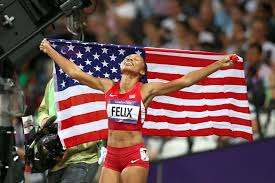

Achievements and awards:

llyson Felix is a four-time recipient of the Jesse Owens Award from USATF (2005, 2007, 2010 and 2012)
She is only the second woman—after Marion Jones—to win the award three times.
She also won the Women's Track & Field ESPY Award in 2006
She won the IAAF female athlete of the year in 2012.
6 Times US National 200 Meters Champion – 2004, 05, 07, 08, 09, 12
2010 US National 100 Meters Champion
3 Times US National 400 Meters Champion – 2011, 2015, 2016
National titles